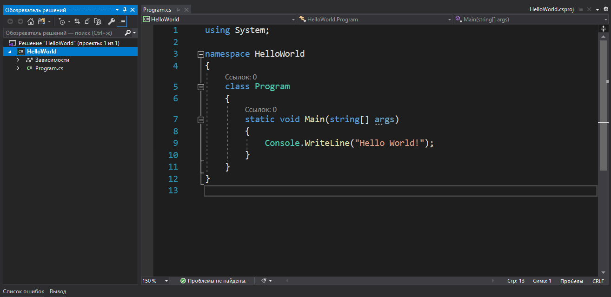

Далекие предки C# появились еще в 60-х годах. Все началось с появления языка B, который в 1969 году был создан коллективом разработчиков из Технологического института Массачусетса (MIT). Главным автором B является Кен Томпсон. Тогда команда работала над операционной системой UNIX. Уже существовавший язык PL/I, применявшийся в то время для мэйнфреймов производства компании IBM, был достаточно громоздким и меньше подходил для поставленной задачи. Поэтому ученые решили создать новый язык, который и получил название B. Он является типичным представителем ранних императивных языков программирования. После B, как это ни странно, последовал С, который был изобретен в 1972 году. Основой для нового языка послужил сам B. Создателями C были Кен Томпсон и Денис Ритчи, которые работали в исследовательской лаборатории компании AT&T (AT&T Bell Telephone Laboratories). В 1971 году Ритчи начал создавать расширенную версию B. Сначала он назвал её NB (New B), но когда язык стал сильно отличаться от B, название сменили на C. B расширился за счет явного использования типов, структур и ряда новых операций. По поводу возникновения языка Си Питер Мойлан в своей книге «The case against C» писал: «Нужен был язык, способный обойти некоторые жесткие правила, встроенные в большинство языков высокого уровня и обеспечивающие их надежность. Нужен был такой язык, который позволил бы делать то, что до него можно было реализовать только на ассемблере или на уровне машинного кода».
Система типов в C#.
C# - это объектно-ориентированный язык программирования, который разработала компания Microsoft. Он был выпущен в 2000 году и основан на языке C++. C# используется для создания Windows-приложений, веб-приложений, игр, мобильных приложений и многого другого.
Язык C# имеет множество возможностей, таких как:
C# также имеет широкую поддержку в интегрированной среде разработки Visual Studio, которая предоставляет различные инструменты для разработки и отладки приложений на этом языке. В целом, C# - это мощный язык программирования с широкими возможностями и хорошей поддержкой от Microsoft. Он является одним из наиболее популярных языков программирования в мире.
Операторы, допускающие логическое значение NULL
Для операндов bool? операторы & (логическое И) и | (логическое ИЛИ) поддерживают следующую логику с тремя значениями:

using System;
class Hello
{
static void
Main()
{
Console.WriteLine("Hello, World");
}
}